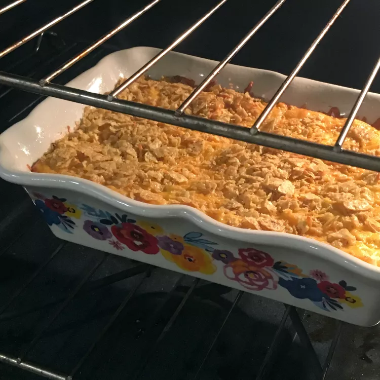

Hashbrown Casserole

Description
You can't go wrong with a good hashbrown casserole. Serve it as a make-ahead breakfast casserole that will feed the whole family, or as a restaurant-worthy side dish for ham. Each of these hashbrown casseroles is ready in about an hour and requires minimal prep work. Whether you're looking for a classic version or a twist on an old favorite, here are quick and easy hashbrown casseroles that are not to be missed!
Ingredients
- 2 Cans Condensed Cream of Chicken Soup
- 1.5 Cups Sour Cream
- 2 TBS Butter
- 2 TBS Dried Minced Onion Flakes
- Ground Black Pepper
- 1 (2 lb.) Package Frozen Shredded Hashbrown Potatoes, Thawed
- 4 oz. Extra Sharp Cheddar Cheese
- 1/2 Cup Crushed Cornflakes Cereal
Steps
- Preheat oven to 350 degrees. Lightly grease a 9X13 baking pan.
- In a large bowl mix together the soup, sour cream, butter, dried onion flakes, and pepper. Stir in the hash browns and 1/2 the cheese. Pour into the prepared baking dish, sprinkle with remaining cheese, and top with crushed cornflakes.
- Bake 45 minutes in the preheated oven, or until cheese is melted and bubbly.